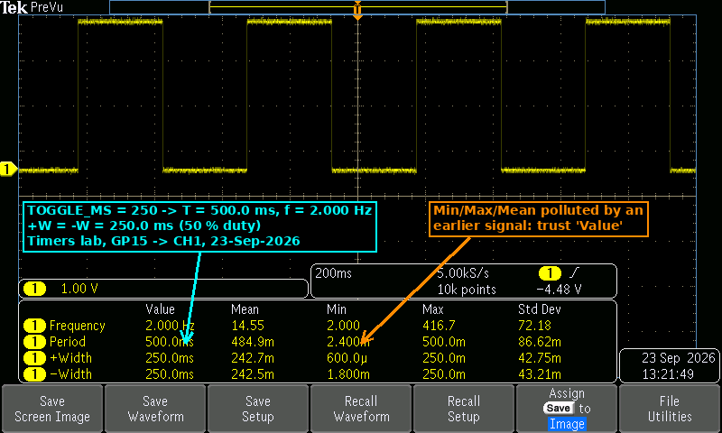
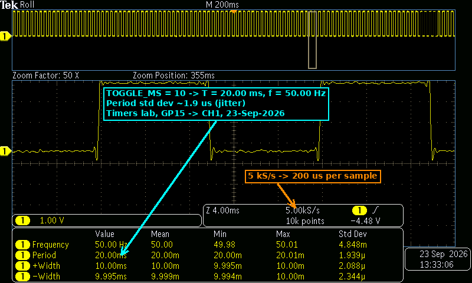
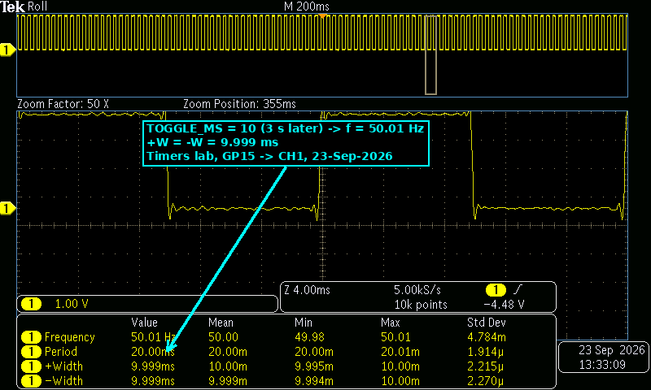

Timers — Repeating Timer on GP15 (Predict vs Measure)
Goal (one sentence): Generate a square wave on GP15 from an SDK repeating timer (no sleep_ms in the loop), predict its period, frequency and duty cycle from TOGGLE_MS, and check the prediction on the oscilloscope.
Prediction
The callback toggles GP15 once every TOGGLE_MS, so one full period is one HIGH plus one LOW:
T = 2 · TOGGLE_MSf = 1 / T = 1000 / (2 · TOGGLE_MS)Hz duty = 50 % (HIGH and LOW both lastTOGGLE_MS)TOGGLE_MS = 250→ HIGH = LOW = 250 ms, T = 500 ms, f = 1000 / 500 = 2.000 HzTOGGLE_MS = 10→ HIGH = LOW = 10 ms, T = 20 ms, f = 1000 / 20 = 50.00 Hz
With a negative delay (-TOGGLE_MS) the callbacks are scheduled start-to-start, so I expected no drift: at most a few µs of jitter from interrupt latency on each edge.
Setup
- Pin map: GP15 → scope CH1 (timer output); scope ground → a Pico GND pin only. GP14 (CH2 callback marker) was not used in these captures.
- Photo of the breadboard: not taken this session (only the Pico and the probe on GP15 / GND).
- Non-default: none. Default 150 MHz
clk_sys, timer at its default 1 µs tick, no pulls, no external parts. Scope at 5 kS/s, 10k points, trigger on CH1 rising edge.
What I did
- Copied the course repeating-timer code, set
OUT_PIN = 15,TOGGLE_MS = 250,add_repeating_timer_ms(-TOGGLE_MS, …). - Built and flashed; probed GP15 on CH1, 200 ms/div, added Frequency / Period / +Width / −Width measurements → E1.
- Changed only
TOGGLE_MSto10, rebuilt and flashed. - Zoomed in 50× (4 ms/div) on the 200 ms/div record → E2.
- Saved a second capture 3 s later to check repeatability → E3.
Evidence
| # | File | What it shows | Cursor / measured value |
|---|---|---|---|
| E1 | img/timers_scope1.png |
TOGGLE_MS = 250, four full periods at 200 ms/div |
f = 2.000 Hz, T = 500.0 ms, +W = 250.0 ms, −W = 250.0 ms |
| E2 | img/timers_scope2.png |
TOGGLE_MS = 10, 50× zoom (4 ms/div) |
f = 50.00 Hz, T = 20.00 ms, +W = 10.00 ms, −W = 9.995 ms, σ(T) = 1.939 µs |
| E3 | img/timers_scope3.png |
Same as E2, captured 3 s later | f = 50.01 Hz, T = 20.00 ms, +W = 9.999 ms, −W = 9.999 ms, σ(T) = 1.914 µs |



Predicted vs measured
| Quantity | Predicted | Measured (evidence #) | Error % | Why the difference |
|---|---|---|---|---|
Period, TOGGLE_MS = 250 |
500 ms | 500.0 ms (E1) | 0.00 % | Real error is µs-level; the 4-digit readout resolves only 0.1 ms |
Frequency, TOGGLE_MS = 250 |
2.000 Hz | 2.000 Hz (E1) | 0.00 % | Same as above |
HIGH / LOW, TOGGLE_MS = 250 |
250 / 250 ms | 250.0 / 250.0 ms (E1) | 0.00 % | 50 % duty, as expected from a toggle |
Period, TOGGLE_MS = 10 |
20 ms | 20.00 ms (E2, E3) | 0.00 % | σ ≈ 1.9 µs is interrupt-latency jitter, far below 10 µs display step |
Frequency, TOGGLE_MS = 10 |
50.00 Hz | 50.00 Hz (E2) / 50.01 Hz (E3) | 0.00 % / +0.02 % | Last-digit variation between captures (jitter + scope rounding) |
LOW time, TOGGLE_MS = 10 |
10 ms | 9.995 ms (E2) / 9.999 ms (E3) | −0.05 % / −0.01 % | 5 kS/s = 200 µs per sample; the edge position is interpolated, so a few µs of jitter shows up |
Conclusion: T = 2 · t_toggle and f = 1 / (2 · t_toggle) hold for both values; the waveform is a clean 50 % square wave and changing TOGGLE_MS is the only thing needed to move the frequency.
What went wrong
- "Too perfect" readings — we couldn't see any delay: we expected something like 500.12 ms or 501 ms (callback/interrupt overhead adding up), but E1 reads exactly 500.0 ms and E2 exactly 20.00 ms. At first we thought the scope was "correcting" the value. What we found by looking at the numbers again:
- The readout has only 4 digits: at 500.0 ms the smallest step is 100 µs, and at 20.00 ms it is 10 µs. Anything smaller is rounded away.
- The sampling is 5 kS/s → 200 µs between samples (see the 5.00 kS/s field annotated in E2), so a few µs of shift on an edge cannot be resolved visually.
- The actual error is tiny: with
-TOGGLE_MSeach deadline isprevious deadline + TOGGLE_MS, so the ISR latency (a few µs at 150 MHz) causes jitter, not drift — it doesn't accumulate. The only place it shows is the Std Dev column: σ(T) ≈ 1.9 µs in E2/E3. - Fix / how to see it next time: use a faster timebase (e.g. 1–10 µs/div around one edge, ≥ 1 MS/s) and read Std Dev or Min/Max instead of the
Valuecolumn.
- Polluted statistics in E1: the Mean/Min/Max columns in E1 show impossible values (Min period 2.4 ms, Max frequency 416.7 Hz, Mean 14.55 Hz) for a 2 Hz signal. Those come from samples taken before the signal was stable (probe being connected / previous program), and the statistics were never reset. We trusted only the
Valuecolumn for E1; next time press Reset Statistics after the signal settles.
Code
#define OUT_PIN 15
#define TOGGLE_MS 250 // only line changed between runs (250 → 10)
static bool toggle_cb(repeating_timer_t *t) {
level = !level;
gpio_put(OUT_PIN, level); // short callback, no sleeps
return true; // keep repeating
}
int main(void) {
...
repeating_timer_t timer;
// negative delay: start-to-start scheduling → jitter but no drift
add_repeating_timer_ms(-TOGGLE_MS, toggle_cb, NULL, &timer);
while (true) tight_loop_contents(); // main() is free
}
Full file at src/timers/timers.c.
Open question
If the callback had real work in it (e.g. a 20 ms busy_wait_ms), how big would the difference between -100 and +100 be on the scope? With a positive delay the callback time should add to every period (≈ 120 ms instead of 100 ms per toggle) — that one should be large enough to see even at this scope resolution, unlike the µs-level jitter above. Want to measure it with the GP14 marker on CH2.